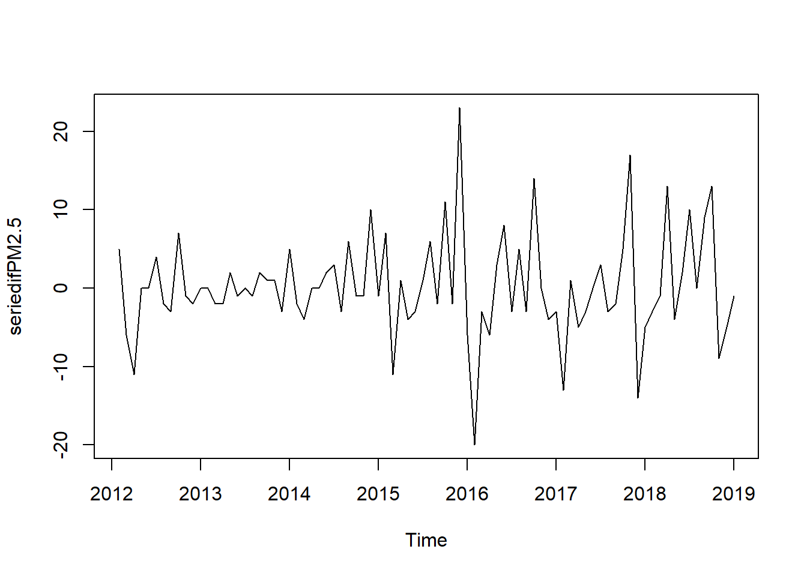
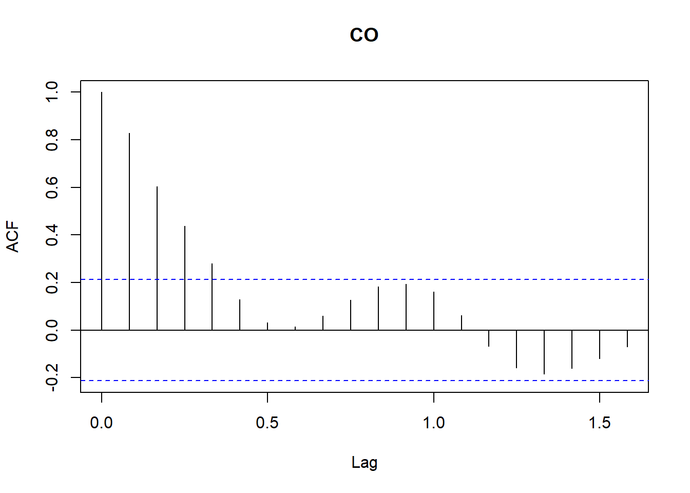

Chapter 6 ACTIVIDAD 6 - PROPUESTA AVANCE 6
Combinar métodos autorregresivos y de aprendizaje estadístico mediante el enfoque de la clasificación para analizar datos de series de tiempo. Aplicar el algoritmo Facebook´s Prophet, y si es viable la justificación para la variable en serie de tiempo vista como una regresión. Esto último, complementa los modelos planteados anteriormente y el ajuste a un modelo lineal y estacionario.
##
## Adjuntando el paquete: 'lubridate'## The following objects are masked from 'package:base':
##
## date, intersect, setdiff, union## Cargando paquete requerido: Rcpp## Cargando paquete requerido: rlang##
## Adjuntando el paquete: 'dplyr'## The following objects are masked from 'package:stats':
##
## filter, lag## The following objects are masked from 'package:base':
##
## intersect, setdiff, setequal, union##
## Adjuntando el paquete: 'tsibble'## The following object is masked from 'package:lubridate':
##
## interval## The following objects are masked from 'package:base':
##
## intersect, setdiff, unionlibrary(readxl)
datos_CentroAltoRendimiento_RMCAB <- read_excel("C:/Users/ALVARO ARIZA/Desktop/Maestria Javeriana/SERIES DE TIEMPO/ACTIVIDAD 7/datos_CentroAltoRendimiento_RMCAB.xlsx",
col_types = c("date", "numeric", "numeric"))
View(datos_CentroAltoRendimiento_RMCAB)## # A tibble: 6 × 3
## DateTime CO PM2.5
## <dttm> <dbl> <dbl>
## 1 2012-01-01 00:00:00 2.3 14
## 2 2012-02-01 00:00:00 1.6 19
## 3 2012-03-01 00:00:00 0.7 13
## 4 2012-04-01 00:00:00 1.2 2
## 5 2012-05-01 00:00:00 1 2
## 6 2012-06-01 00:00:00 0.9 2## # A tibble: 6 × 3
## ds y PM2.5
## <dttm> <dbl> <dbl>
## 1 2012-01-01 00:00:00 2.3 14
## 2 2012-02-01 00:00:00 1.6 19
## 3 2012-03-01 00:00:00 0.7 13
## 4 2012-04-01 00:00:00 1.2 2
## 5 2012-05-01 00:00:00 1 2
## 6 2012-06-01 00:00:00 0.9 2## # A tibble: 6 × 3
## ds CO y
## <dttm> <dbl> <dbl>
## 1 2012-01-01 00:00:00 2.3 14
## 2 2012-02-01 00:00:00 1.6 19
## 3 2012-03-01 00:00:00 0.7 13
## 4 2012-04-01 00:00:00 1.2 2
## 5 2012-05-01 00:00:00 1 2
## 6 2012-06-01 00:00:00 0.9 26.1 Implementación del Modelo CO
new_dataCO %>% ggplot(aes(x = ds, y = y))+
geom_line()+
theme_minimal()+
labs(title = 'Datos contaminantes',
subtitle = '2012 - 2019',
x = 'Año',
y = 'CO',
caption = 'Elaboración propia con datos RMCAB')
## Disabling weekly seasonality. Run prophet with weekly.seasonality=TRUE to override this.## ds
## 83 2018-11-01
## 84 2018-12-01
## 85 2019-01-01
## 86 2019-01-02
## 87 2019-01-03
## 88 2019-01-04## Warning: `select_()` was deprecated in dplyr 0.7.0.
## ℹ Please use `select()` instead.
## ℹ The deprecated feature was likely used in the prophet package.
## Please report the issue at <https://github.com/facebook/prophet/issues>.
## This warning is displayed once every 8 hours.
## Call `lifecycle::last_lifecycle_warnings()` to see where this warning was
## generated.## ds yhat yhat_lower yhat_upper
## 83 2018-11-01 2.9656756 1.7754718 4.1119549
## 84 2018-12-01 3.1528002 1.9315486 4.3462193
## 85 2019-01-01 3.1047901 1.9412221 4.3386466
## 86 2019-01-02 1.9606939 0.8101764 3.0564290
## 87 2019-01-03 0.8256338 -0.3889046 1.9605166
## 88 2019-01-04 -0.2733752 -1.4279662 0.9155672
6.2 Implementación del Modelo PM2.5
new_dataPM2.5 %>% ggplot(aes(x = ds, y = y))+
geom_line()+
theme_minimal()+
labs(title = 'Datos contaminantes',
subtitle = '2012 - 2019',
x = 'Año',
y = 'PM2.5',
caption = 'Elaboración propia con datos RMCAB')
## Disabling weekly seasonality. Run prophet with weekly.seasonality=TRUE to override this.## ds
## 83 2018-11-01
## 84 2018-12-01
## 85 2019-01-01
## 86 2019-01-02
## 87 2019-01-03
## 88 2019-01-04## ds yhat yhat_lower yhat_upper
## 83 2018-11-01 23.730189 13.8524069 33.03242
## 84 2018-12-01 29.238423 20.1785089 38.92461
## 85 2019-01-01 27.845753 18.3023109 37.79915
## 86 2019-01-02 18.828672 9.3132685 27.71728
## 87 2019-01-03 10.030661 0.8687492 19.29683
## 88 2019-01-04 1.704915 -7.5367113 11.10005